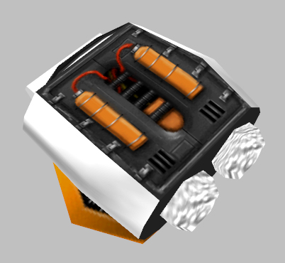

Just so you know, your video time references need to be swapped.
Oops, ok solved
While I know this most likely won’t happen, I do have a suggestion. If you devs can’t/won’t do it, maybe someone could do it in a mod.
In We’ve Got Hostiles, in the giant warehouse room (the one with, like, 3 accessible floors, that houses the 2nd or 3rd skirmish with the HECU), it’d be kind of cool if the old acoustic version of the We’ve Got Hostiles theme played.
The one called Joel Neilson Demo 5 on his website:
Youtube link for convenience
I suggest this for a few reasons:
First of all, I (personally) love the sound of this version. It still has energy, but in a more… subtle way.
Secondly, this battle, while not huge or scripted (to my knowledge) is pretty big considering it’s the first full-on fight you have with the HECU (previous fights were smaller)
Third, and finally, it makes this less of a one-off tune, and more of a theme for the HECU. With the theme being fresh in the player’s mind, and connected with a largish conflict with the HECU, entering the elevator to the surface and hearing the bigger, angrier, and beefier version of this song (the current We’ve Got Hostiles theme) play as the elevator rises will be a HUGE “Holy S**t” moment. And the tension will only rise as the lift does, climbing to the surface to reveal what a chaotic mess it has become.
Anyways, I’ll fully understand if you don’t want to do this. I just think it would add a little something to the warehouse fight, and make the anticipation of viewing the surface that much greater. Thanks!
Just replace the sound file, takes 10 seconds. I did the same thing with the old OaR2 track.
Well what he wants to do is have the old version play in the map before the topside fight, not replace it.
Would be fairly easy to do as a small mod if you decompiled the map. (assuming you could get it to compile again - I think you’d need to fix a lot of stuff the decompiler would break)
I think that’d actually be pretty cool, but I certainly don’t have time for another project right now.
I agree on the Houndeye animations and idle weapon anims for the snarks… I especially like the alert animation where the houndeye stands on it’s back leg… That would really add something if the houndeye had a squad leader and this was the alert for the pack to attack.
Something else I noticed is that When an Alien Grunt lands a hit on the player there is no Hit sound… There seems to be no program string for when an alien grunt lands a hit on the player yet… Unlike the assassin that does have a sound when it lands a melee strike.
I wanted to go back and touch on the HECU marine engineer variant… I said before about the engineer bursting into flames when shot and exploding… But I also wondered if the canister on his back could be a physics canister and have the same properties as that sending him across a room before exploding? Anyway I think the HECU Engineer variant is the most important variant to include because this variant bursts through doors… And having to burst through doors makes it obvious that the Marines are not meant to be there… It would also make for some interesting assault fights… Building anticipation as the welder goes around a door before marines burst in. on the other side of that… If you are on the same side of a door as an engineer bursting into an area… This gives possibility of an area that is inaccesable until this action happens in your favour for either ability to progress or a room with health and Battery power and ammo.
I actually miss the physics canisters a bit and would make for an interesting variant to exploding barrels all the time.
I’d also like to apologise what I said earlier but I never suggested anyone did or should steal anything in terms of content only to use and modify and create from I believe is the proper process.
When I also mentioned an idea about the HECU using Gas or chemical mp5 nades as an idea to make We got hostiles vent maze more interesting and give plausibilty to the HECU wearing Gas masks… I mentioned having the player wear a gasmask… Then it dawned on me that gordon could aquire a HEV Suit Helmet.

It would be better than a gas mask and another part of what the HEV suit does or possible appilcation… What does it look like in the Helmet is up to artistic interpretation

perhaps a an overlay like this one or something new entirely… but it’s certainly something that would be welcomed I am sure and I stated this before it’s a gameplay mechanic similar to being underwater interms of o2 level. Donning the helmet for a couple of sections of game could be an interesting addition to the game and pretty cool in terms of the suit. I would imagine you could only aquire a helmet from another member of the science team (in HEV suit) who had unfortunatly died and once the section is completed the Helmet would be removed by trigger… If gordon was ever to wear a Helmet it makes more sense in Black Mesa research facility than in the sequals.
I seem to remember that this idea has been suggested previously and got totally shot down If I recall… But if there was a reason to wear it i.e. gas or chemical threat… This is the only instance it should be considered.
only place I can see that being of use is on xen, where the atmosphere is supposedly toxic to humans. (that and who knows whats floating in the air on xen might be a virus that makes your brain explode some where)
Do we have a citation for this, because I don’t remember anyone saying that at any point in any of the games. Gordon, Shepard, and Barney all survived on Xen without any additional gear (sans longjump for Gordon) and the Xenians can survive on Earth. This suggests to me that there’s a similar atmosphere composition.
Don’t you love it when people invent “facts” with such conviction?
Nonetheless the deduction is valid.
And then…
It’s just a game!
I imagine wearing the helmet to be something very noticeable…
I would approve of a claustrophobic feel and the world to sound muffled…creating an insular perspective… I think it would make the first levels of xen quite scary…but to be able to remove once in the factory…
I suppose you would also need to get air tanks from dead explorers…
But with a very lenient air supply.
I think it would improve how weird xen is and that suit is your safe haven but come interloper the helmet needs to come off.
The last thought i have is if the glass on the visor crack on death cam…
Lets also not forget the cut item scuba tank… This was ditched and possibly intended for xen.
Think about atmosphere and astronaughts on the moon
Sorry for double post on my phone…
The visor would have to be subtle…perhaps misted with subtle reflection…
I would also say that a slower game speed would also enhance for the first few levels before interloper
this has more to do with art than what is canon but lets just say it would be an interesting take and if valve had the tech of today how would they approach it…
Should an npc when ragdoll on death lose touch with gravity and float off I think so…
I know my deduction isn’t 100%, but giving evedense I would think that xen has a hostile atmosphere, even if it is oxygen based it might be a a concentration which makes it hard to breath. which would warrant the use of a helmet or mask.
If they don’t do it for the Steam version, I may have to get my feet wet and learn how Hammer works. I’ve worked in it a bit, but never attempted to edit someone else’s map.
I don’t much care for the “riding a horse” idle weapon anims for the Snarks. Too much levity, in my view.
Would be great if Houndeyes rising up on one leg anim could be incorporated into BMS. It looks really cool and doesn’t look out of place as something that would naturally occur or that a Houndeye would be easily capable of doing.
Although the Houndeye wounded anim also looks great, I’d have a problem bringing myself to putting another slug into one who’s wounded, out of sympathy for it. Then again, it is suffering so putting it out of its misery is probably best.
I’d like to know the reasoning as to why the Devs didn’t use any of these.
@darkone… pure oxygen is harmful to humans… So if xen had a much higher oxygen level close to 100% this would not only explain xen life being different but that they also can survive or some of the life can co-inhabit.
I said about the factory and being able to take mask off here…This is because the air in the factory has a lower oxygen and higher carbon dioxide count more similar to earth… You know who also has to breathe this type of air that is why he lives there…
I am going to do a rough vid mock up of helmet sound on xen to see what you lot think…
But in game language it translates the same effect as being underwater or similar but with “ch-body” unaffected and with a subtle looped breathing on “ch-body”
I actually totaly overlooked the standing up animation for the Houdeye, it would be really cool if they added it back because most of the houndeyes I’ve seen in the game are sleeping, I’ve rarely seen a Houndeye walking except in your first tram ride in blast pit. Seeing some more Houndeyes walking and standing up like that would be nice and if incorporated near sleeping Houndeyes it could be understood that its their pack leader (Maybe I’m drawing some inpiration from OBM, but still).
Seeing how Dadster was unsure wether to kill or let the houndeye live when wounded makes me want to have the wounded animation even more, because I imagine it adds some moral ambiguity, and I thing some moral ambiguity at certain parts of the game is a really nice feature.
I can imagine that the “riding the snark” weapon animation was take away due to being silly, but I would like if they reincorporated it as maybe an easter egg, that the animation happens if you stay a long time idle with the snark on your hands.
I’ve noticed numerous instances of wall vents that are missing their cover grates. There are several instances of headcrabs jumping out of vents. What about having a vent spew out a crawling half zombie down onto to an unsuspecting player resulting in some good scares and panic. There could be one instance where the vent has no grate and another where the grate is in place and the zombie bursts through it. After it happens a couple of times, the player would always be fearful of approaching others vents and wouldn’t nonchalantly pass by/under them without some amount of trepidation.
As well, in BMS areas where there are wall vents, coupled with shaking tremors, have the grates separate from the wall vent, as a result of the repeated heavy vibrations, and clang down onto the floor. You could even extend this to include sections of ceiling mounted pipes breaking away and falling, or even fluorescent light fixtures, showing that the place is really coming apart. In these instances there would no enemies… but from previous experiences, the player doesn’t know that. Cheap but effective scares.

Ok so I did a rough video mock up of helmet game play… Please note this is not in the engine and done with video and sound effects… And it is very rough but It gets the point across… I think it would make the initial xen levels more scary or nightmare like for the first experience of xen until at interloper the helmet is removed. This is done using HECU Marines Xen maps video… I also wanted to slow the video to give an impression of more weightlessness (or different gravity). but tested and about 90% of normal running speed worked well. But I did not do this…
If you think it is no good no problem but please bear in mind that all the black mesa explorers have helmets on… So I am assuming the tech would not allow for these effects when the original game was made… You will also have to imagine weapon swapping noises are unaffected as Hud sounds would be full volume as It is part of the suit.
The cut item SCUBA from HL1

It was intended for underwater use but here is what the air tanks look like…They could also be destroyed.
check this sound file
https://files.anitalink.com/gamecache/hl/valve/sound/fvox/atmospherics_on.wav
So I think this is the ingredients missing from the xen experience over my last few posts… But that don’t mean I am right.
As previously stated I think there should be one helmet wearing experience in Black Mesa due to gas or chemical attack this would prepare the player for the full HEV suits capabilities.
Thanks lord that I’m not a BM dev. My feels with ya :’(